What time is it?
كم الساعة؟
Excuse me, what time is it?
عفوًا، كم الساعة؟
Telling the Time
مرّر الماوس على السماعة أو اضغط عليها لتسمع النطق. السماعة الكبيرة نطق أمريكي (وهو المكتوب بالرموز)، وزر UK نطق بريطاني.
كم الساعة؟
Excuse me, what time is it?
عفوًا، كم الساعة؟
هل تعرف كم الساعة؟
Sorry, do you have the time?
معذرة، هل تعرف كم الساعة؟
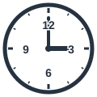
الساعة الثالثة تمامًا
It's three o'clock, so we should go.
الساعة الثالثة، لذا علينا الذهاب.
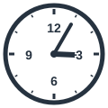
الثالثة وخمس دقائق
The train leaves at five past three.
يغادر القطار في الثالثة وخمس دقائق.
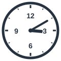
الثالثة وعشر دقائق
We arrived at ten past three.
وصلنا في الثالثة وعشر دقائق.
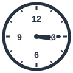
الثالثة والربع
The lesson begins at quarter past three.
يبدأ الدرس في الثالثة والربع.
الثالثة والثلث
Meet me at twenty past three.
قابلني في الثالثة والثلث.
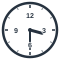
الثالثة والنصف
I finish work at half past three.
أنهي عملي في الثالثة والنصف.
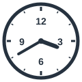
الرابعة إلا ثلثًا
It's twenty to four already.
الساعة الآن الرابعة إلا ثلثًا.
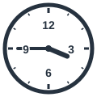
الرابعة إلا ربعًا
The film starts at quarter to four.
يبدأ الفيلم في الرابعة إلا ربعًا.
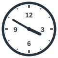
الرابعة إلا عشر دقائق
The bus comes at ten to four.
تأتي الحافلة في الرابعة إلا عشر دقائق.
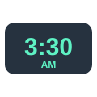
الثالثة والنصف (طريقة مباشرة)
My flight lands at three thirty.
تهبط رحلتي الثالثة والنصف.
السابعة صباحًا
I wake up at seven a.m.
أستيقظ في السابعة صباحًا.
السابعة مساءً
The shop closes at seven p.m.
يغلق المتجر في السابعة مساءً.
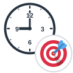
في التاسعة تمامًا
The meeting starts at nine sharp.
يبدأ الاجتماع في التاسعة تمامًا.
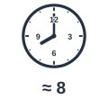
في حوالي الثامنة
I'll be home at about eight.
سأكون في البيت في حوالي الثامنة.
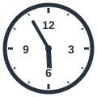
السادسة تقريبًا
It's almost six. Let's go home.
الساعة تقارب السادسة. لنذهب إلى البيت.
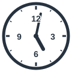
بعد الخامسة بقليل
She called just after five.
اتصلت بعد الخامسة بقليل.
ساعتي مُقدَّمة
My watch is fast, so I'm always early.
ساعتي مقدَّمة، لذا أصل مبكرًا دائمًا.
ساعتي متأخرة
Sorry I'm late. My watch is slow.
آسف على تأخري، ساعتي متأخرة.
ستسمع كلمة من كلمات الصفحة، فاضغط على الصورة التي تعبر عنها.
الكلمات المميزة هي كلمات هذه الصفحة. اضغط على أي كلمة ليبدأ الصوت منها ويكمل ما بعدها.
Excuse me, what time is it? My phone is dead.
عفوًا، كم الساعة؟ هاتفي فارغ البطارية.
It's three o'clock. Oh, wait. My watch is fast, so it's really five past three.
الساعة الثالثة. آه، انتظر. ساعتي مقدَّمة، فهي في الواقع الثالثة وخمس دقائق.
Thanks. My bus comes at ten past three, and the next one is at quarter past three.
شكرًا. حافلتي تأتي في الثالثة وعشر دقائق، والتالية في الثالثة والربع.
I think the timetable changed. Now they come at twenty past three and half past three.
أظن أن الجدول تغيّر. الآن تأتي في الثالثة والثلث والثالثة والنصف.
Really? My appointment is at twenty to four, and the office closes at quarter to four.
حقًا؟ موعدي في الرابعة إلا ثلثًا، ويغلق المكتب في الرابعة إلا ربعًا.
If you take the three thirty bus, you'll get there at about ten to four.
إذا ركبت حافلة الثالثة والنصف، فستصل هناك نحو الرابعة إلا عشر دقائق.
Oh no, that's too late. Do you have the time again, please?
يا إلهي، هذا متأخر جدًا. هل تعرف كم الساعة الآن من فضلك؟
Let me check. My watch is slow today. Wait, it's the other one that's fast! Anyway, you still have a few minutes.
دعني أتحقق. ساعتي متأخرة اليوم. انتظر، الأخرى هي المقدَّمة! على أي حال، ما زال لديك بضع دقائق.
When do you finish work?
متى تنتهي من عملك؟
I start at seven a.m. and normally finish at seven p.m. Tomorrow's meeting begins at nine sharp, so I must be home at about eight tonight.
أبدأ في السابعة صباحًا وأنتهي عادة في السابعة مساءً. يبدأ اجتماع الغد في التاسعة تمامًا، لذا يجب أن أكون في البيت في حوالي الثامنة الليلة.
It's almost six in Dubai now. My brother calls me just after five every day.
إنها السادسة تقريبًا في دبي الآن. يتصل بي أخي كل يوم بعد الخامسة بقليل.
الكلمات المميزة هي كلمات هذه الصفحة. اضغط على أي كلمة ليبدأ الصوت منها ويكمل ما بعدها.
Telling the time in English is easier than it looks. If you want to ask a stranger politely, you can say, "Do you have the time?" or simply, "What time is it?" The answer may be, "It's three o'clock." After that, we count the minutes past the hour: five past three, ten past three, quarter past three, twenty past three, and half past three. After the half hour, we count the minutes to the next hour: twenty to four, quarter to four, and ten to four. Many people, especially Americans, simply read the numbers and say three thirty. To separate morning from evening, use seven a.m. for the morning and seven p.m. for the evening. When the time is exact, you can say at nine sharp. When you are not sure, you can say at about eight. For times close to the hour, use almost six or just after five. And if your clock is wrong, you can apologize by saying, "My watch is fast," or "My watch is slow."
قراءة الساعة بالإنجليزية أسهل مما تبدو. إذا أردت أن تسأل شخصًا غريبًا بأدب، يمكنك أن تقول: «هل تعرف كم الساعة؟» أو ببساطة: «كم الساعة؟». وقد تكون الإجابة: «الساعة الثالثة». وبعد ذلك نعدّ الدقائق بعد الساعة: الثالثة وخمس دقائق، الثالثة وعشر دقائق، الثالثة والربع، الثالثة والثلث، الثالثة والنصف. وبعد نصف الساعة نعدّ الدقائق الباقية على الساعة التالية: الرابعة إلا ثلثًا، الرابعة إلا ربعًا، الرابعة إلا عشر دقائق. ويكتفي كثير من الناس، خصوصًا الأمريكيين، بقراءة الأرقام فيقولون three thirty. وللتمييز بين الصباح والمساء، استخدم seven a.m. للصباح وseven p.m. للمساء. وعندما يكون الوقت دقيقًا، يمكنك أن تقول at nine sharp. وعندما لا تكون متأكدًا، يمكنك أن تقول at about eight. وللأوقات القريبة من الساعة استخدم almost six أو just after five. وإذا كانت ساعتك غير مضبوطة، يمكنك الاعتذار بقولك: «ساعتي مقدَّمة» أو «ساعتي متأخرة».